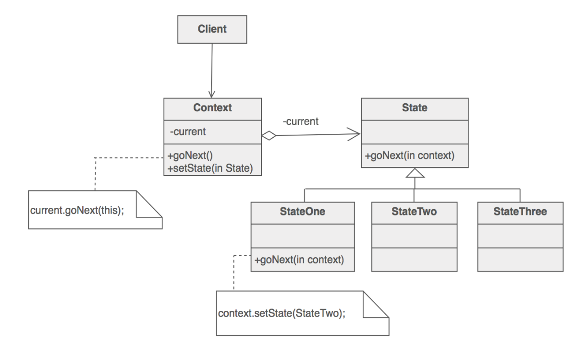

定义
目的
- 根据不同的状态，采取不同的行为
- 允许一个对象在其内部状态改变的时候改变其行为。这个对象看上去就像是改变了它的类一样
优点
- 减少了 if else，switch 语句的复杂程度
- 增加新的状态和逻辑时，便于修改
缺点
- 类的种类增加
*
步骤
- 定义一个
context类，来给外接提供一个接口 - 定义一个
state基类 - 根据
state状态，派生定义其他的不同状态类 - 在派生
state中，定义不同的行为 - 在
context中持有一个当前state的变量 - 改变
context中的state状态
适用场景
- 对象的行为取决于当前的状态
- 代码中包含大量的与对象状态有关的条件语句。状态模式将每一个条件分支放入一个独立的
state类中。
结构
context中定义客户端所感兴趣的接口，并持有一个状态类的实例，表示类当前的状态state中定义一个接口，用以封装context中对象的一个特定的状态所对应的行为- 具体状态实现了
state中所需要动作的具体行为（可以不实现，那么那个行为保持state中的行为）
UML 图

例子
context 类
- 其中定义了两个方法
goNextgoPre，分别调用当前状态中的nextpre方法 - 复写了
toString方法，便于观察结果 - 在构造函数中初始化当前的
state
package io.github.xuyushi.state;
/**
* Created by xuyushi on 16/1/29.
*/
public class Wrapper {
private State state;
public Wrapper(State state) {
this.state = state;
}
public void goNext() {
state.next(this);
}
public void goPre() {
state.pre(this);
}
public void setState(State state) {
this.state = state;
}
@Override
public String toString() {
return "now state is "+ state.getClass().getName();
}
}
state 基类
- 定义了
nextpre方法，子类可以不用复写全部的方法，所以在父类中要做相应的处理，也可以抛出异常
package io.github.xuyushi.state;
/**
* Created by xuyushi on 16/1/29.
*/
public abstract class State {
public void next(Wrapper wrapper) {
System.out.println( "error" );
}
public void pre(Wrapper wrapper) {
System.out.println( "error" );
}
}
具体实现类
- A 状态只复写 next 方法
- B 状态复写 next 和 pre方法
- C 状态只复写 pre 方法
package io.github.xuyushi.state;
/**
* Created by xuyushi on 16/1/29.
*/
public class StateA extends State {
public void next(Wrapper wrapper) {
wrapper.setState(new StateB());
}
}
package io.github.xuyushi.state;
/**
* Created by xuyushi on 16/1/29.
*/
public class StateB extends State {
@Override
public void next(Wrapper wrapper) {
wrapper.setState(new StateC());
}
@Override
public void pre(Wrapper wrapper) {
wrapper.setState(new StateA());
}
}
package io.github.xuyushi.state;
/**
* Created by xuyushi on 16/1/29.
*/
public class StateC extends State {
@Override
public void pre(Wrapper wrapper) {
wrapper.setState(new StateA());
}
}
客户端使用
每次改变状态之后打印当前状态
package io.github.xuyushi.state;
/**
* Created by xuyushi on 16/1/29.
*/
public class StateMain {
public static void main(String[] args) {
System.out.println("StateMain RUNNING");
// write your code here
Wrapper wrapper = new Wrapper(new StateA());
System.out.println(wrapper.toString());
wrapper.goPre();
System.out.println(wrapper.toString());
wrapper.goNext();
System.out.println(wrapper.toString());
wrapper.goNext();
System.out.println(wrapper.toString());
wrapper.goNext();
System.out.println(wrapper.toString());
wrapper.goNext();
System.out.println(wrapper.toString());
}
}
log
StateMain RUNNING
now state is io.github.xuyushi.state.StateA
error
now state is io.github.xuyushi.state.StateA
now state is io.github.xuyushi.state.StateB
now state is io.github.xuyushi.state.StateC
error
now state is io.github.xuyushi.state.StateC
error
now state is io.github.xuyushi.state.StateC